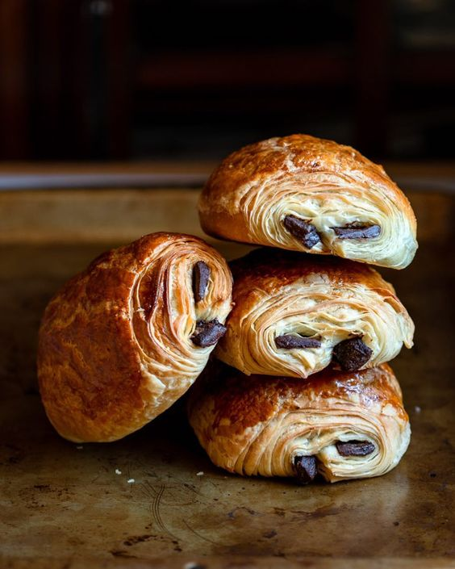

Vive Le Pain Au Chocolat!
🥐Sweet & Flacky🥐
Crispy and Irresistible! These flaky, golden-colored, chocolate-filled pastries are the best creations for humankind. Whether you have it with coffee or jam, this treat will enlighten your meal and leave you feeling warm inside. Check out some recipes down below!
Pain au chocolat also known as chocolatine in the south-west part of France and in Canada, or couque au chocolat in Belgium, is a type of viennoiserie sweet pastry consisting of a cuboid-shaped piece of yeast-leavened laminated dough, similar in texture to a puff pastry, with one or two pieces of dark chocolate in the center. Check out these tasty photos.
🤎🥐🤎Gallery🤎🥐🤎
-

- 
Learn more about the history of Pain of Chocolat, Sign up for our Taste of France newsletter down below.